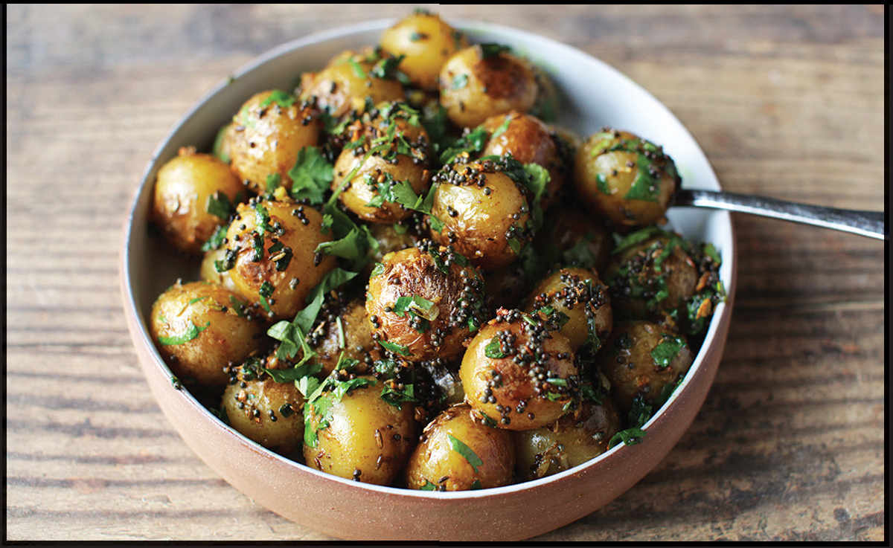

STIR-FRIED NEW POTATOES WITH HOT AND NUMBING SPICES
|
Yield Serves 4 to 6 |
Active Time 20 minutes Total Time 40 minutes |
This recipe will work with a wide range of spice blends. Replace the Hot and Numbing Spice Blend one to one with any spice blend you enjoy, including Blistered Cumin and Mustard Curry Spice Blend (here).
INGREDIENTS
For the Potatoes:
2 pounds (900 g) small yellow new potatoes, scrubbed and rinsed
Kosher salt
For the Stir-Fry:
¼ cup (60 ml) peanut, rice bran, or other neutral oil
4 medium garlic cloves, minced (about 4 teaspoons/20 g)
2 scallions, chopped
2 to 3 tablespoons (about 20 g) Hot and Numbing Spice Blend (here)

This is a dish I first tasted from a street vendor in Xi’an, the capital of central China’s Shaanxi province at the eastern end of the Silk Road. In my head I had romantic notions that it was a product of that geography, like so many of the Muslim-influenced, warm-spiced dishes you find in the city. However, when I reached out to Fuchsia Dunlop and Steph Li about the origins of the dish, I discovered that they are by all accounts a modern creation, a product of the city’s burgeoning tourism industry. This doesn’t make them any less delicious.
The vendors have mobile carts with two cooking stations. One is a wide, flat pan in which small yellow new potatoes shallow-fry in a single layer. When a customer places an order, the vendor scoops out some of those potatoes and transfers them to a wok, where they’re stir-fried with ground chiles, garlic, scallions, chile oil, and a spice blend heavy on warm spices like cumin, fennel, and anise, as well as some mouth-numbing Sichuan peppercorns. Li also helped me identify a mystery powder as a specific Chinese brand of chicken bouillon. At home I use Knorr powdered bouillon, though replacing it with a little extra salt and a pinch of MSG will keep the dish fully vegetarian. (The same spice blend is wonderful on fried chicken wings—see my recipe for Málà Salt and Pepper Chicken Wings on here—or even frozen French fries.)
I’ve also found that boiling the potatoes in heavily salted water is a good alternative to the shallow-fry method the street vendors use. This basic technique—boiling, stir-frying, and tossing with spices—works for a wide range of spice blends (see Note).
DIRECTIONS
1For the Potatoes: Place the potatoes in a large pot. Cover with cool water by 2 inches. Season heavily with salt (it should taste like very salty sea water when dissolved). Place over high heat, bring to a boil, and cook until the potatoes show no resistance when a knife or cake tester is poked through the largest one, about 10 minutes after they come to a boil. Drain the potatoes and spread into a single layer on a rimmed baking sheet to air-dry.
2For the Stir-Fry: When the potatoes are dry, heat 3 tablespoons (45 ml) of the oil in the wok over high heat until shimmering. Add the potatoes and cook, stirring and tossing frequently, until browned and crisped in spots, about 4 minutes.
3Clear a small space in the center of the wok and add the remaining oil to it. Immediately add the garlic, scallions, and spice mixture to the oil and stir it around briefly until aromatic, about 15 seconds. Toss everything until the potatoes are thoroughly coated in spices, about 15 seconds. Season to taste with more salt as desired. Transfer to a serving bowl and serve.